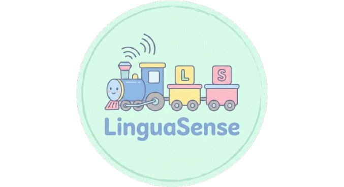

LinguaSense
Proje Açıklaması
LinguaSense, çocuklar için tasarlanmış, fonolojik ve sentaktik dil becerilerini değerlendiren eğitici bir mobil uygulamadır. Uygulama, çocuk dostu arayüzü, pastel renkler ve interaktif animasyonlarla dil gelişimini destekler. Sesli okuma özelliği ve görsel geri bildirimlerle öğrenmeyi eğlenceli hale getirir.
📱 Özellikler
🎵 Fonolojik Test
- 3 Alt Kategori:
- • Çıkış Yeri (Place of Articulation)
- • Çıkış Şekli (Manner of Articulation)
- • Ötümlülük-Ötümsüzlük (Voicing)
- Grup Sistemi:
- • Grup A: Kelime çiftlerinin sol tarafındaki kelimeleri duyar
- • Grup B: Kelime çiftlerinin sağ tarafındaki kelimeleri duyar
- Test Akışı:
- • Kategori başına 2 soru
- • Her soruda 3 kelime sesli olarak okunur
- • Katılımcı duyduğu kelimeleri seçer
- • Zaman ölçümü ve kayıt
📝 Sentaktik Test
- Tren Temalı Arayüz:
- • Tren rayları ve vagonlar
- • Kelimelerin vagonlara yerleştirilmesi
- • İnteraktif kelime bankası
- Test Akışı:
- • 6 cümle sırayla gösterilir
- • Kelimeler karışık sırada sunulur
- • Doğru sıralamada tren animasyonu
- • "Harikasın!" başarı mesajı
🎨 Kullanıcı Arayüzü
Uygulama çocuk dostu bir tasarıma sahiptir:
- 🎨 Pastel renkler ve yumuşak tonlar
- 📖 Büyük, okunabilir yazı tipleri
- 😊 Emojiler ve görsel öğeler
- ✨ Animasyonlar ve geri bildirimler
- 🖼️ Arka plan görselleri
🛠️ Kullanılan Teknolojiler
- Kotlin: Programlama dili
- Jetpack Compose: Modern UI framework
- Room Database: Yerel veritabanı
- Text-to-Speech (TTS): Sesli okuma
- Material Design 3: UI bileşenleri
- Navigation Compose: Ekran navigasyonu
- ViewModel & StateFlow: Durum yönetimi
📋 Gereksinimler
- Android 7.0 (API 24) veya üzeri
- Android Studio Hedgehog veya üzeri
- Kotlin 1.9.0 veya üzeri
📊 Veritabanı
Uygulama, test sonuçlarını Room Database kullanarak yerel olarak saklar:
- Yaş bilgisi
- Kategori bazlı zaman ölçümleri
- Test tarihleri
🎯 Test Yapısı
Fonolojik Test Kelimeleri
Çıkış Yeri:
- Grup A: post, bere, sapan / kabar, mine, minik
- Grup B: tost, dere, satan / kadar, nine, mimik
Çıkış Şekli:
- Grup A: meze, tıpa, yaban / dere, yatak, maden
- Grup B: beze, sıpa, yaman / nere, yasak, manen
Ötümlülük:
- Grup A: erken, kocan, kalp / satır, tere, sarf
- Grup B: ergen, koçan, galp / sadır, dere, zarf
Sentaktik Test Cümleleri
- Kedi süt içti
- Babam eve geldi
- Arı bal yaptı
- Ayşe ip atladı
- Dedem çay içti
- Mavi balon havaya uçtu
Uygulama Galerisi
Geliştirici Notları
LinguaSense projesi, çocukların dil gelişimini desteklemek amacıyla geliştirilmiş bir eğitim uygulamasıdır. Bu projede Jetpack Compose ile modern UI tasarımı, Room Database ile veri yönetimi, Text-to-Speech entegrasyonu ve çocuk dostu arayüz tasarımı konularında deneyim kazandım. Uygulama, eğitim alanında teknolojinin nasıl kullanılabileceğine dair güzel bir örnek teşkil etmektedir.